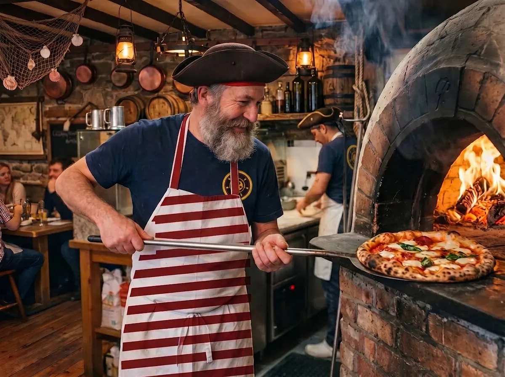
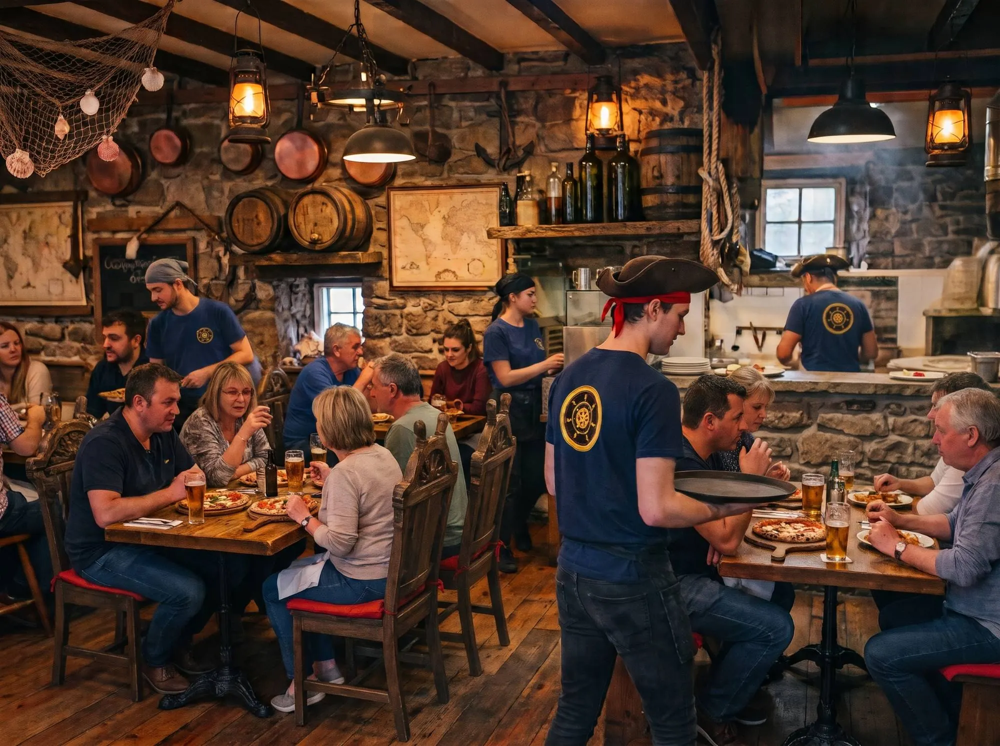

Forno a Lenha
Pizzas assadas em forno a lenha tradicional, no ponto certo de crocância e com aquele cheirinho de brasa.
Massa de fermentação lenta, queijo de verdade e brasa de lenha. Zarpe com a gente pelos sete mares até o melhor tesouro: uma pizza quentinha na sua mesa.

A Pizzaria dos Sete Mares nasceu de uma ideia simples: juntar a tradição do forno a lenha com a diversão de uma boa aventura. Cada pizza é aberta à mão, assada em minutos na brasa e servida num salão que parece o porão de um navio, com direito a baús, mapas e cordas.
Aqui a tripulação é família. Seja num jantar a dois ou numa festa de aniversário cheia de piratinhas, o objetivo é o mesmo: ninguém sai de barriga vazia.
Pizzas assadas em forno a lenha tradicional, no ponto certo de crocância e com aquele cheirinho de brasa.
Selecionamos os melhores ingredientes todos os dias, direto do mercado, sem atalhos nem enlatados.
Um salão que mistura taverna de porto caribenho e porão de galeão, pra toda a família se divertir enquanto espera a pizza.
Três sabores que nunca saem do cardápio e já conquistaram muito marujo.
Mussarela, calabresa em rodelas e cebola.
Mussarela, fatias de tomate e manjericão fresco.
Mussarela, provolone, gorgonzola e catupiry.
Navegue pelo cardápio e escolha o tamanho ideal para a tripulação.
Chame a gente no WhatsApp com seu pedido e endereço.
Em até 40 minutos a pizza quente chega na sua porta.
Paredes de pedra, vigas de madeira, lampiões acesos, barris, mapas antigos e uma tripulação de chapéu tricórnio servindo as mesas. O salão da Pizzaria dos Sete Mares parece o porão de um galeão e a taverna de um porto movimentado, tudo no mesmo lugar.

“A borda tem aquele tostadinho de forno a lenha que eu só achava na Itália. Voltei três vezes na mesma semana.”
“Fizemos o aniversário do meu filho aqui. As crianças ficaram malucas com as fantasias e a pizza sumiu da mesa.”
“Chegou em 30 minutos, ainda quentinha e crocante. A de quatro queijos é covardia.”
Peça agora pelo WhatsApp ou venha conhecer o salão. A tripulação já está com o forno aceso.